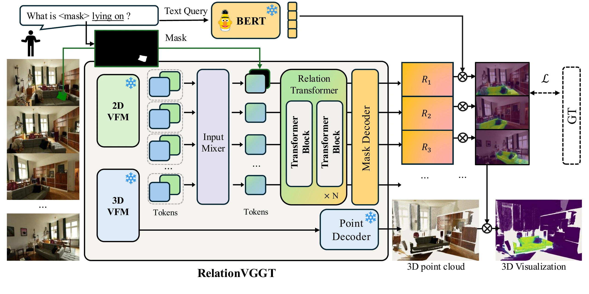
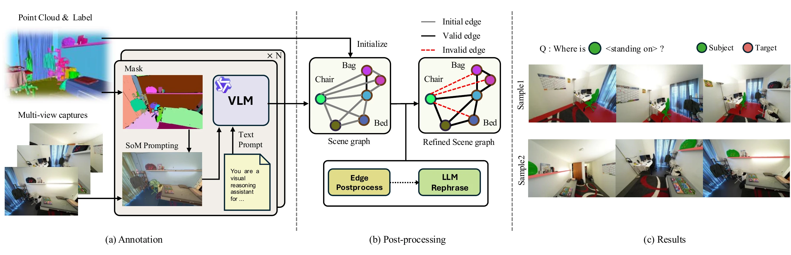
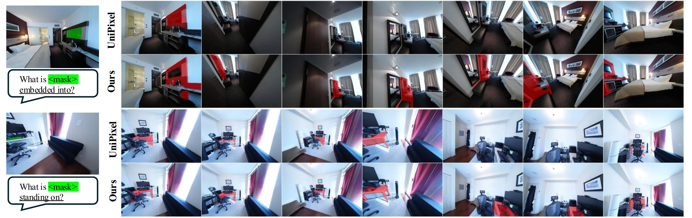

Abstract
Recent advances in 3D reconstruction have progressed from per-scene optimization to feed-forward inference, and semantic scene understanding has followed suit—yet existing methods remain confined to object-centric perception, neglecting spatial relations between objects. We formulate 3D spatial relation segmentation in a feed-forward, pose-free multi-view setting: given a visually specified subject and a relational text query, the model segments the target across views without receiving its category name. To this end, we propose RelationVGGT, a novel feed-forward framework that integrates semantic features from a visual foundation model with geometry-aware representations from a 3D geometry foundation model and leverages a relation transformer for subject-conditioned, cross-view relation prediction—requiring neither per-scene optimization nor known camera poses. We additionally provide a fully automated annotation pipeline built on ScanNet++ with VLMs and LLMs, enabling scalable training data generation for this new task.
The task
A scene is captured by a set of images. One of them is the reference view, where a mask marks the subject: the object the relation starts from. A relational text query names the spatial relation, and the target is the object that satisfies it with respect to the subject. For every other view, the model must segment that target. If the subject is a monitor and the query is “resting on”, the answer is the desk under it, in every view where the desk appears.
Given
- Unposed multi-view images of a scene
- A subject mask in a single reference view
- A relation phrase, e.g. “resting on”
Predict
- The target object’s mask in every other view
Never given
- The target’s category name
- Camera poses or per-scene optimization
Key insight
3D relational reasoning does not require volumetric search: 3D-aware features and pixel-wise geometric grounding let us localize relational targets directly in image space.
What changed? From volumetric search to pixel-grid prediction
The closest prior work, RelationField, models relations inside a radiance field. We keep the idea of a relation feature but move where it is predicted.
Prior work: volumetric search
gθ(x, z) ↦ r
- x
- 3D position of a candidate target point
- z
- 3D position of the query subject
- r
- relation feature between x and z, compared with the text embedding of the query
Finding the target means evaluating gθ at every candidate x in the scene volume. That requires an explicit reconstruction optimized per scene from posed images, and scene-specific positional encodings tie what is learned to one coordinate system.
RelationVGGT: pixel-grid prediction
fθ(Ir, Ms, It, u) → rt(u)
- Ir
- reference image, the one view where the subject is marked
- Ms
- binary mask of the subject in Ir
- It
- a target view: any of the other images
- u
- a pixel location in It
- rt(u)
- relation feature between pixel u and the subject, aligned with the language embedding space
With the subject fixed by Ir and Ms, the search moves onto each target view’s image grid. Comparing rt(u) with the query embedding e(q) gives a dense relevance map directly: no volume to sweep, no per-scene optimization, and the model transfers to unseen scenes.
The task also differs from 3D referring segmentation, where a text expression can name the target outright. Here the subject is specified visually and only the relation is given in words, so the target’s identity must be inferred from the subject–relation pair.
Method
RelationVGGT turns the reference subject and a set of unposed views into language-aligned relation features for every target-view pixel, in a single forward pass.

Semantics meet geometry
Dense DINOv2 features supply object-level semantics; Pi3 encoder tokens supply multi-view geometry. An input mixer fuses both into joint tokens for every view.
Relation transformer
Target tokens alternate cross-attention to the subject-masked reference tokens with self-attention across all target views, making them subject-conditioned and multi-view aware.
Open-vocabulary masks
A DPT head upsamples tokens to pixel-aligned relation features. A sigmoid over feature–text similarity gives the mask; Pi3’s point decoder lifts it to 3D.
One spatial arrangement can be described many ways (“standing on”, “on”, “supported by”), so each target mask is supervised with several compatible phrasings at once, using a multi-query sigmoid focal loss and a Dice loss.
Automatic relation annotation
Multi-view consistent relation labels are scarce and costly to annotate by hand. We build them automatically on ScanNet++: a VLM proposes relations per frame with Set-of-Mark prompting, proposals are kept only if at least three viewpoints agree, geometric checks on 3D boxes remove implausible edges, and an LLM rephrases each triplet to diversify the queries.

Results
We evaluate on manually annotated relation benchmarks built on Replica, LERF, and ScanNet++: 119 queries covering 28 unique predicates. mAcc is the fraction of queries with IoU above 0.25.
| Method | Setting | Replica | LERF | ScanNet++ | Average | ||||
|---|---|---|---|---|---|---|---|---|---|
| mIoU | mAcc | mIoU | mAcc | mIoU | mAcc | mIoU | mAcc | ||
| LangSplat | Per-scene, posed | 0.191 | 0.256 | 0.159 | 0.254 | 0.074 | 0.064 | 0.141 | 0.191 |
| OpenGaussian | Per-scene, posed | 0.349 | 0.470 | 0.256 | 0.378 | 0.162 | 0.254 | 0.255 | 0.367 |
| RelationField | Per-scene, posed | 0.326 | 0.537 | 0.276 | 0.410 | 0.307 | 0.491 | 0.303 | 0.480 |
| RelationField† | Per-scene, posed | 0.219 | 0.336 | 0.232 | 0.346 | 0.240 | 0.395 | 0.230 | 0.359 |
| RelationVGGT (Ours) | Feed-forward, pose-free | 0.446 | 0.640 | 0.254 | 0.332 | 0.445 | 0.675 | 0.382 | 0.549 |
Best Second Third. Average is the macro average over the three benchmarks. RelationField† removes target-object retrieval and uses the relation embedding alone. RelationField also receives the ground-truth target category at test time; RelationVGGT does not.
Wide camera baselines
We also compare with video foundation models, feeding the multi-view frames as a video with the subject region and relation, but not the target category. The 119 queries are sorted by camera baseline into three near-equal groups. Video models degrade as viewpoints spread apart, while the 3D geometry backbone keeps RelationVGGT stable.
| Method | Small baseline (40) | Medium baseline (39) | Large baseline (40) | |||
|---|---|---|---|---|---|---|
| mIoU | mAcc | mIoU | mAcc | mIoU | mAcc | |
| VideoLISA | 0.137 | 0.171 | 0.105 | 0.143 | 0.038 | 0.064 |
| Sa2VA | 0.267 | 0.321 | 0.225 | 0.289 | 0.192 | 0.225 |
| UniPixel | 0.423 | 0.496 | 0.328 | 0.451 | 0.354 | 0.475 |
| RelationVGGT (Ours) | 0.417 | 0.550 | 0.404 | 0.640 | 0.366 | 0.575 |

More analysis
Every component pulls its weight: removing any one of them lowers ScanNet++ mIoU by 0.023 to 0.075.
- Input features. Replacing Pi3 tokens with positionally encoded, scale-standardized pointmaps drops mIoU from 0.445 to 0.370: raw coordinates carry geometry but none of the semantics already embedded in learned features. Removing DINOv2 (Pi3 only) costs 0.023 mIoU as object-level semantics are lost. Removing Pi3 (DINOv2 only) costs 0.075, since DINOv2 alone has no multi-view awareness and cannot capture cross-view correspondence.
- Relation transformer. Our block alternates subject-conditioned cross-attention with global self-attention across target views. A cross-attention-only variant (0.399) and VGGT’s alternating attention, which interleaves global and per-frame self-attention (0.394), both fall short.
- Training objective. Supervising each mask with a single predicate instead of several compatible ones drops mIoU to 0.406. Spatial relations are many-to-one, and multi-query supervision avoids penalizing semantically plausible alternatives.
- Annotation pipeline. Training on labels without geometry-based edge filtering drops mIoU to 0.398, because the model then learns from physically implausible relations, such as contact between distant objects.
| Design | mIoU | mAcc |
|---|---|---|
| RelationVGGT | 0.445 | 0.675 |
| 1. Input features | ||
| Pointmap PE + DINOv2 | 0.370 | 0.568 |
| Pi3 only | 0.422 | 0.579 |
| DINOv2 only | 0.370 | 0.579 |
| 2. Relation transformer | ||
| Cross-attention only | 0.399 | 0.579 |
| Alternating attention (VGGT) | 0.394 | 0.571 |
| 3. Training objective | ||
| Single-label focal loss | 0.406 | 0.604 |
| 4. Annotation pipeline | ||
| w/o geometric edge filtering | 0.398 | 0.625 |
ScanNet++ benchmark, 40 queries, threshold τ = 0.3.
A single click is enough: RelationVGGT needs the right instance, not a pixel-perfect subject mask.
We replace the ground-truth subject mask with prompted or automatically estimated masks, using the same checkpoint without retraining. A single SAM2 click or box works as well as the ground-truth mask: the boundary need not be precise, as long as the right instance is picked. Fully automatic grounding with Qwen3-VL + SAM2 keeps most of the accuracy; GroundingDINO drops more, mainly because 58% of reference views contain several instances of the queried category.
| Subject mask | Mask IoU | mIoU | mAcc |
|---|---|---|---|
| Ground truth | 1.000 | 0.382 | 0.549 |
| SAM2, one click | 0.871 | 0.383 | 0.551 |
| SAM2, one box | 0.923 | 0.382 | 0.549 |
| Qwen3-VL + SAM2 | 0.719 | 0.357 | 0.512 |
| GroundingDINO + SAM2 | 0.587 | 0.322 | 0.454 |
All three benchmarks, 119 queries.
RelationVGGT learns what a predicate means rather than matching memorized labels: synonyms leave its answer intact, while a different relation changes it.
Replacing each benchmark predicate with a meaning-preserving synonym barely changes the result, even for expressions whose stems never occur in training. Prediction is not tied to exact predicate strings.
| Predicate replaced with | n | ΔmIoU | ΔmAcc |
|---|---|---|---|
| Common synonym, set A | 119 | −0.006 | −0.006 |
| Common synonym, set B | 119 | −0.004 | −0.001 |
| Rare synonym | 113 | −0.022 | −0.042 |
| Unseen synonym | 119 | −0.031 | −0.040 |
The reverse check: when the predicate’s meaning is changed while the scene, subject, and original target stay fixed, predictions move away from the original target. The model responds to what the relation means, not only to the subject.
| Predicate replaced with | n | ΔmIoU |
|---|---|---|
| Random relation from another family | 119 | −0.158 |
| Relation with a different correct target | 118 | −0.276 |
Specifying the subject visually removes the instance ambiguity that text-only referring must resolve, giving +0.169 mIoU over the strongest adapted referring method.
MVGGT and ReferSplat take the subject as text rather than a mask, so we adapt each through its native text interface. With text alone, the subject must itself be grounded from a noun phrase, which is often ambiguous when several instances share a category.
| Method | Subject given as | Target category in input | Test-scene optimization | mIoU | mAcc |
|---|---|---|---|---|---|
| MVGGT | Text | Yes | No | 0.153 | 0.217 |
| ReferSplat | Text | No | Yes | 0.213 | 0.263 |
| RelationVGGT | Visual mask | No | No | 0.382 | 0.549 |
Averaged over all three benchmarks. Not a matched-input comparison: the methods also differ in query form, pretraining data, and optimization.
Multi-view and geometric filtering nearly doubles label precision, from 36.4% to 67.2%, deliberately trading coverage for reliability.
Two authors independently audited all 4,695 relation proposals our pipeline produced on 25 ScanNet++ scenes, without seeing its keep/remove decision. Filtering nearly doubles precision and discards most wrong relations. It is deliberately conservative: a false relation that survives becomes training supervision, while a dropped correct one only costs coverage.
| Human audit, 25 scenes | Value |
|---|---|
| Precision before filtering | 36.4% |
| Precision after filtering | 67.2% |
| Incorrect proposals removed | 92.0% |
| Proposals kept | 770 of 4,695 |
Inter-annotator agreement 83.1% (Cohen’s κ = 0.670; 0.816 excluding ambiguous judgments).
BibTeX
@inproceedings{kim2026relationvggt,
title = {RelationVGGT: Visual Geometry Transformers for
3D Spatial Relation Segmentation},
author = {Kim, Minsu and Choe, Jaesung and Lee, Jiwoo and
Wang, Yu-Chiang Frank and Kim, Seon Joo},
booktitle = {Advances in Neural Information Processing Systems},
year = {2026}
}